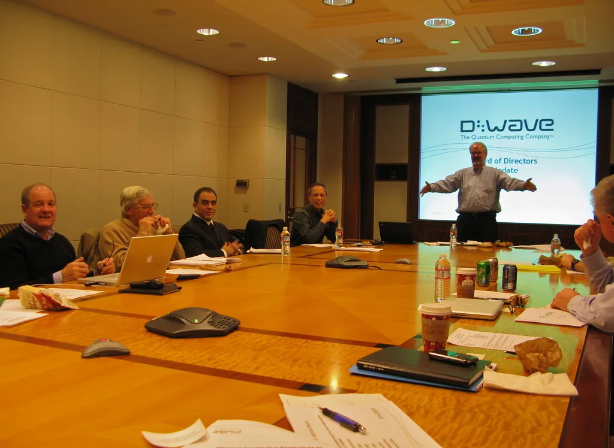
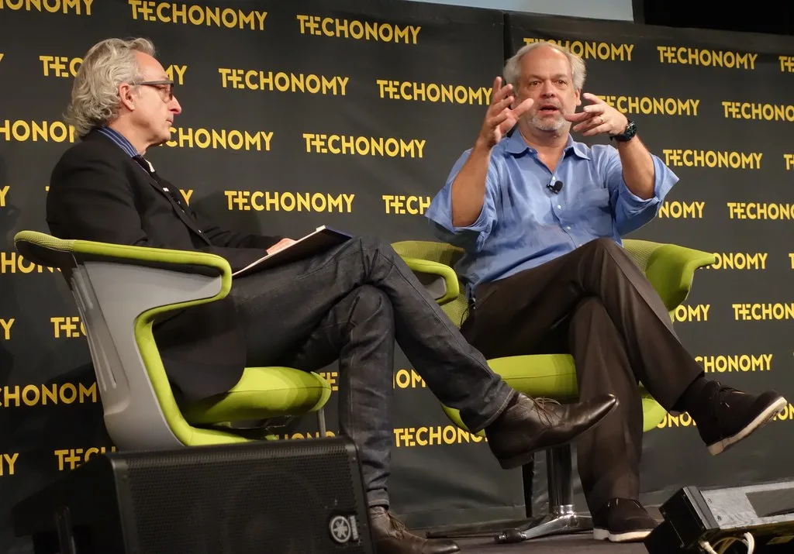

네이버, 대화형 검색 'AI탭' 정식 출시…광고 수익화 시동
네이버가 생성형 인공지능 기반 대화형 검색 서비스 'AI탭'을 전체 사용자를 대상으로 정식 출시했다. 모바일과 PC 검색창에서 곧바로 AI 검색에 접근할 수 있도록 접근성을 확대한 것이 특징이다. 베타 출시 이후 두 달 만에 누적 사용자 400만 명을 기록하며 빠르게 자리를 잡았다는 평가를 받는다. 정식 출시와 함께 서비스 응답 속도와 정확도도 한층 개선된 것으로 전해졌다.
AI탭은 단순히 검색 결과를 보여주는 데서 그치지 않고, 장소 탐색과 지도 확인, 실시간 예약까지 하나의 흐름으로 연결하는 것을 목표로 한다. 이용자가 대화하듯 질문을 이어가면 관련 정보를 종합해 답변하고, 필요한 경우 예약이나 길찾기 같은 실제 행동으로까지 자연스럽게 연결하는 구조다. 네이버는 이를 통해 검색 서비스를 단순 정보 제공을 넘어 실행형 AI 에이전트로 확장하겠다는 방침을 밝혔다.

이와 함께 네이버는 21일부터 AI 브리핑 지면에 검색광고를 노출하기 시작하며 AI 서비스 기반 수익화에도 본격적으로 나섰다. 광고 에이전트가 사용자의 검색어와 AI 브리핑의 문맥을 함께 분석해, 이에 맞는 상품 광고를 자연스럽게 연결하는 방식으로 운영된다. 네이버는 광고가 검색 경험을 해치지 않도록 노출 위치와 빈도를 조절하고 있다고 설명했다.
업계에서는 이번 조치를 두고 생성형 AI 검색이 전 세계적으로 확산되는 가운데, 국내 검색 시장에서도 AI 기반 광고 모델이 본격적으로 자리 잡는 신호탄으로 해석하고 있다. 기존 키워드 검색광고와는 다른 방식의 수익 구조가 만들어지는 셈이며, 광고주 입장에서도 새로운 마케팅 채널이 열렸다는 반응이 나온다.

경쟁사인 카카오 역시 최근 톡딜과 선물하기 판매자를 대상으로 상품 카탈로그와 광고 플랫폼을 연동한 신규 광고 상품을 선보이는 등, AI를 접목한 광고·커머스 경쟁이 국내 플랫폼 업계 전반으로 확산되는 분위기다. 두 회사 모두 검색과 커머스, 광고를 하나로 묶는 방향으로 서비스를 재편하고 있어, 이용자 데이터를 기반으로 한 맞춤형 서비스 경쟁도 한층 치열해질 전망이다.
이러한 흐름 속에서 국내 검색 광고 시장의 무게중심도 점차 AI 기반 서비스로 옮겨갈 것이라는 관측이 나온다. 광고주들은 새로운 광고 형태에 맞춰 마케팅 전략을 다시 짜야 하는 상황에 놓였으며, 관련 대행업계에서도 대응 전략 마련에 분주한 모습이다.
네이버는 앞으로 AI탭의 기능을 지속적으로 고도화해 이용자 편의성과 광고 효율을 동시에 끌어올리겠다는 계획이다. 다만 AI 브리핑에 광고가 붙는 것에 대해 이용자들이 어떻게 받아들일지, 검색 결과의 신뢰도를 어떻게 유지할지가 향후 관건으로 꼽힌다. 정보 제공과 상업적 이해관계 사이에서 균형을 잡는 것이 이 서비스의 지속 가능성을 좌우할 것이라는 전망도 나온다. 이용자들의 반응과 피드백을 반영해 광고 노출 방식을 지속적으로 조정해 나갈 것으로 보인다. 업계에서는 이번 정식 출시가 국내 검색 시장의 경쟁 구도에도 적지 않은 영향을 미칠 것으로 내다보고 있다. 글로벌 빅테크의 AI 검색 서비스와도 본격적으로 경쟁해야 하는 만큼, 네이버가 국내 시장에서의 우위를 어떻게 지켜낼지도 관전 포인트로 꼽힌다.